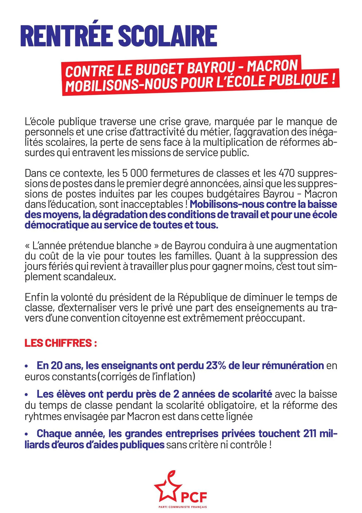
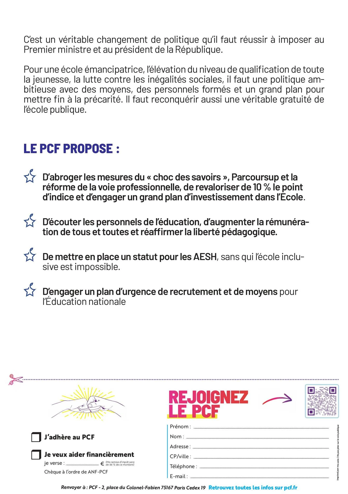

Tract national relayé
Rentrée 2025. Mobilisons-nous pour l’école publique
Date indiquée par Facebook · 29 août 2025
Repères éditoriaux
Le tract du PCF pour la rentrée défend une école publique gratuite qui donne les mêmes droits à tous les élèves. Il demande des recrutements, une revalorisation des personnels, un statut pour les AESH et un plan d’investissement dans l’Éducation nationale.
Texte conservé avec la publication
Mobilisons nous pour l’École Publique !


Sources
Archive rouge · export Facebook · AR-0002-FB-01034
À lire aussi · Éducation. Le PCF s’oppose aux 4 000 suppressions de postes annoncées